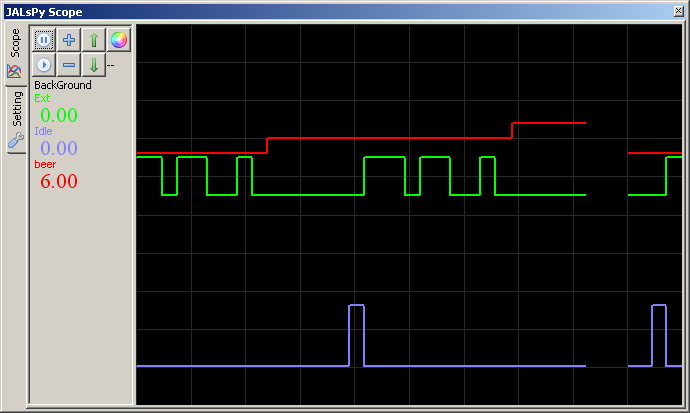
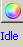
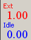
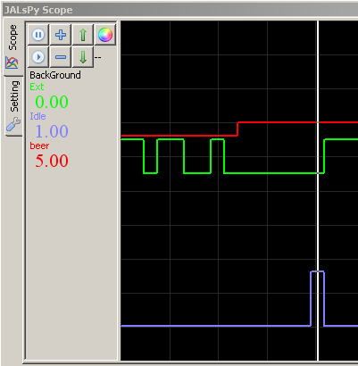
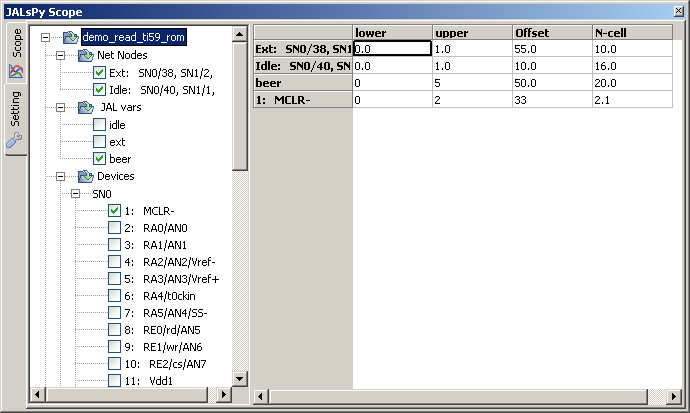

november 2007
JALsPy Oscilloscope
Introduction
With the Oscilloscope you can watch all kind of signals in a time-related way. Not only IO-pins or other hardware signals can be viewed, but also virtual nets, CPU registers and normal JAL variables. Because the scope can have a large memory, it's very convenient to search phenomena which happened a while ago (much easier than a table). All settings are automatically stored in the project's configuration file.
As the scope can also control the simulation by speedbuttons, a trigger input combined with a (delayed) breakpoint might be a valuable addition.
The actual value of the signals are displayed numerical on the left panel.

Speed Buttons
|
Stop the simulation (Re-)start the simulation |
|
|
Increase the gain of the selected signal by a factor 2 Decrease the gain of the selected signal by a factor 2 |
|
|
Shift the selected signal 1 cell up Shift the selected signal 1 cell down |
|
|
 |
Set the color of the selected cell The name of the selected signal ('--' if no signals is selected) |
|
 |
Name and value of the displayed signals, either the actual value is the simulation is running, or the value at the active cursor, when the simulation is paused |
|
Cursor Measurement If the simulation is stopped, you measure the exact values with a cursor. Mouse Left-Click will show and drag the cursor, while the values at the cursor position are shown on the left panel. Mouse Middle-Click lets the cursor disappear. In the future a second cursor will be added, so accurate time measurements can be performed. |
 |
Fine Tuning and Signal Selection
Clicking on the Setting tab, will show an hierarchical ordered list of all current and paste known signals. Some signals will, due to their nature, appear in more than one node. Signals can be (de-)selected by clicking on the corresponding node. The selected signals will also be shown in the grid, where fine tuning of gain and offset can be set. If a signal is deselected, it disappears from the grid, but it's settings remain available and will be stored in the projects configuration file. Some variables may not be present at the current moment, like a JAL variable that is not yet declared, in that case you may select it, but it will a value in the scope pane, only after it's declared.
